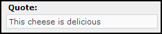
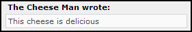

|
This document has been adapted from the phpbb2 users guide for the postnuke
module PnphpBB2.
PNphpBB2 1.2x is highly configurable. Most configurations are done
in the administration panel. To get to the administration panel,
log in with an Administrator username and click the link that says Go to Administration
Panel at the bottom of any page or click on the PNphpBB2 link in postnuke admin.
The admin panel uses two frames. The narrow navigation frame on the left shows
the sub-panels available. The main frame shows the panel you are currently
using.
There are three uncategorized links at the top of the navigation
frame:
Admin Index is the default admin page. It shows
Forum Statistics and Who's Online.
Forum
Index will take you to index.php in the PNphpBB2 1.2x root, which shows the list of forums.
Preview Forum will also take you
to the forum index, but will keep the navigation frame, making it easier to
return to other parts of the admin panel.
The attachment information is in a seperate document. Click here!
This information is in a seperate document. Click here!
The Forum Management panel is where most forum configuration is done.
Here you will control the organization of forums and categories.
Configuration of a forum's name, description, and auto-prune settings is
also handled here.
- Adding Forums - To create a new forum, look to the bottom of the category you want your
new forum to be in. Enter the desired forum name in the text box
at the bottom, and click Create New Forum. You will be taken to the General Forum
Settings panel.
- Editing Forums - To edit a forum, look in that forum's row and click Edit. You
will be taken to the General Forum Settings panel. Here you may adjust
the following settings: Forum Name - This is the name of the forum.
(e.g. General Chat, Movie Reviews, Support, etc.)
Description - Describes your forum. This is the smaller text that appears under each forum name on the Forum Index.
Category - A dropdown list box that will allow you to choose what category a forum is contained in. Forum Status - A dropdown list box that will allow you to lock or unlock a forum. A locked forum may not be posted to except by moderators and administrators.
Auto-Pruning - Here you can enable/disable auto-pruning. (For more information, see
Auto-Prune or 3.1.3 Pruning).
- Moving Forums - A forum's location can be described in two ways. A forum is in
a category, and has a location relative to other forums in that category.
To change the category that a forum is in, use the General Forum Settings panel, as
described in 3 Editing Forums.
To change a forum's position
relative to other forums in its category, use the Move Up and Move
Down links in the General Forum Settings panel. Move Up will
swap the position of the desired forum with the forum above it. Move
Down will swap the position of the desired forum with the forum below it.
Move Up has no effect on the top forum in a category, and, likewise,
Move Down has no effect on the bottom forum.
- Resync - Some information in the database is contained it multiple tables.
This makes the board run faster by reducing the number of database queries
on some pages. Sometimes the information in different tables of the
database gets out of sync. This usually is caused by a connection
problem which interrupts updating of the database.
When this happens, your forum may
start behaving in a strange way. Links to topics or posts that don't exist are
common symptoms of this problem.
If you are having this problem, you can
fix it by clicking Resync in the General Forum Settings Panel.
This will recalculate the forum information based on the actual posts that
exist. This operation has no harmful effect on the forums, just generates a
small amount of overhead while you are doing it. This is a good thing to try if
you are not sure what is causing a problem on your board.
- Auto-prune - Auto-prune is a feature that will cause a forum to prune itself.
(For more information on what pruning is, see Pruning). To enable
auto-prune, make sure the checkbox is checked.
You may set the age of
posts to prune. All posts older than the set age will be pruned. You may also
set the frequency of pruning. For example, you could have the forums prune
themselves once a day, or once every seven days
- Adding Categories - To add a new category, look at the bottom of the forum/category listing.
Enter the desired category name into the text box and click Create New Category.
- Editing Categories - To move a category, click Move Up or Move Down in
the category's row. Move up will swap the position of the desired
category with the category above it. Move Down will swap the position of
the desired category with the category below it. Move Up has no effect
on the top category, and, likewise, Move Down has no effect on the bottom
category.
- Moving Categories - To move a category, click Move Up or Move Down in
the category's row. Move up will swap the position of the desired
category and the category above it. Move Down will swap the position of
the desired category and the category below it. Move Up has no effect on
the top category, likewise Move Down has no effect on the bottom
category.
- Sub Categories - To create a sub-category, you first create the category as you normally would and then you edit it to move it under another category.
In this panel you can control the forum permissions. You can restrict
the behavior of different types of users on a per-forum basis. Here
you can control who can read and post in a forum. You can also control
who can make special posts, like Sticky topics or announcements.
To edit a forum's permissions, select the forum in the dropdown box and
click Look Up
Forum.
Note: You also have two permissions that you can set for the attachment mod if you use it. They are post(upload files) and
download files.
- Setting Simple Permissions -
There are seven simple permission levels in phpBB 2.0.0. For
more information, see Permission Levels
and Permission Types. Here is a description of the behaviors allowed by each of
the simple settings.
Public - Anonymous users can read and post. Registered Users can
additionally edit their posts, and create and vote in polls. Moderators and
administrators can make stickies and announcements.
Registered -
Anonymous users can read the forum. Registered Users can additionally post,
reply, edit their posts, and create and vote in polls. Moderators and
administrators can make stickies and announcements.
Registered[Hidden] - Anonymous users may only register.
Registered Users can read, post, edit their posts, and create and vote in
polls. Moderators and administrators can make stickies and announcements.
Private - Non-Private users may only see the forum. Private
Users can read, post, reply, edit their posts, and create and vote in polls.
Moderators and administrators can make stickies and announcements.
Private[Hidden] - Only Private Users may see the forum. Private
Users can read, post, reply, edit their posts, and create and vote in polls.
Moderators and administrators can make stickies and announcements.
Moderators - Anonymous and Normal users can only see the forum.
Moderators and administrators can read, post, reply, edit their posts, create
polls, vote in polls, and make stickies and announcements.
Moderators[Hidden] - Normal users cannot see the forum.
Moderators and administrators can read, post, reply, edit their posts, create
polls, vote in polls, and make stickies and announcements.
This table
shows the equivalent Advanced Permissions for each Simple
Permissions setting.
| |
Public |
Registered |
Registered
[Hidden] |
Private |
Private
[Hidden] |
Moderators |
Moderators
[Hidden] |
| View |
ALL |
ALL |
REG |
ALL |
PRIVATE |
ALL |
MOD |
| Read |
ALL |
ALL |
REG |
PRIVATE |
PRIVATE |
MOD |
MOD |
| Post |
ALL |
REG |
REG |
PRIVATE |
PRIVATE |
MOD |
MOD |
| Reply |
ALL |
REG |
REG |
PRIVATE |
PRIVATE |
MOD |
MOD |
| Edit |
REG |
REG |
REG |
PRIVATE |
PRIVATE |
MOD |
MOD |
| Delete |
REG |
REG |
REG |
PRIVATE |
PRIVATE |
MOD |
MOD |
| Sticky |
MOD |
MOD |
MOD |
MOD |
MOD |
MOD |
MOD |
| Announce |
MOD |
MOD |
MOD |
MOD |
MOD |
MOD |
MOD |
| Vote |
REG |
REG |
REG |
PRIVATE |
PRIVATE |
MOD |
MOD |
| Poll create |
REG |
REG |
REG |
PRIVATE |
PRIVATE |
MOD |
MOD |
- Setting Advanced Permissions - Advanced Permissions allow you to precisely control all behaviors in
a forum. To set advance permissions for your forum, click Advanced Mode after choosing the forum to edit. You are presented with a
table that has each permission type with a dropdown box underneath it. You may
set each of these permissions to any level you like by using the dropdown
boxes.
For more information on permission types and levels, see Permission Types and Permission Levels.
- Permission Types
There are ten Permission Types. Each of these types
refers to a specific behavior within a forum. This is the behavior that each of
these permissions grants:
View - The user may see the forum on
the forum index page. Read - The user may view topics in a forum, and
read posts in those topics.
Post - The user may post new topics
in the forum.
Reply - The user may post replies to existing
topics in the forum.
Edit - The user may edit his/her own posts
in the forum. It is not recommended that this be set to "ALL", because that
will allow any anonymous post to be edited by any anonymous user.
Delete - The user may delete his/her own posts in the forum. A
post can only be deleted by a non-moderator if it has not been replied to. It is
not recommended that this be set to "ALL", because that will allow any anonymous
post to be deleted by any anonymous user.
Sticky - The user may
make sticky Topics (for more information, see Sticky Topics)
Announce - The user may make Announcements (for more information,
see Announcements)
Vote - The user may vote in Polls (for more
information, see Polls). It is not
recommended that this be set to "ALL", because that will allow an anonymous user
to vote more than once.
Poll create - The user may create Polls
(for more information, see Polls) - Permission Levels
There are five permission levels. A user may be a member of
more than one permission level. To be in each of the permission levels:
ALL - Every user in the board is in this permission level. This
level is used particularly to grant permissions to users who are not registered
and/or logged in.
REG - A user is in this permission level if
he/she is both registered at the board, and is currently logged in.
PRIVATE - There are two parts to being a private member of a
forum. In the forum permissions, there must be at least one permission type set
to the permission level PRIVATE. Additionally, in the User Permissions
or Group Permissions panel, the user or group must be "Allowed Access" to the
private forum (or have permission types set to "ON" in advanced mode.) For more
information, see Group Admin.
MOD - Someone is in this permission level if they are a moderator
of the forum.
ADMIN - Board administrators (and no one else) are
in this permission level.
To prune a forum, select it (or "All Forums") from the dropdown
box and click Look up Forum. Specify a number of days in the text
field. All posts with no replies to them in the range specified will be
removed.
Pruning is typically done to remove old unneeded posts
and to save space. If you like, you can set a forum to prune itself
automatically. For more information, see Editing Forums.
The General Administration will allow you to perform general
board administration tasks. This includes database backup, general board
settings, smilies, word censors, and will let you send mass emails to members of
your board.
This panel is where most of the boards settings and preferences can be
changed. A seperate PNphpBB2 Config which controls some PNphpBB2 specific
settings is discussed futher down the page.
General Board Settings
- Disable board - When Yes, the board is disabled and will not
display to anyone. Do not log out before you re-enable the board, or you will
not be able to log back in.
- User email via board - When enabled, users may email each other through a
special form on the board. This keeps a user's email private, and prevents spam
bots from gathering email addresses. When this is disabled, user's email
address will be shown.
- Flood Interval - This is the number of seconds a user must wait after
posting before he can post again. This feature is meant to prevent
users/scripts from flooding the board with posts
- Topics Per Page - This controls how many topics of a forum will be
displayed on the View Forum page. Additional topics can be seen by advancing to
the next page of the forum.
- Posts Per Page - This controls how many posts of a topic will be
displayed on the View Topic page. Additional posts can be seen by
advancing to the next page of the topic.
- Posts for Popular Threshold - When a topic gets many posts, the topic
icon will change to indicate that the topic is popular. This setting
will allow you to set the number of posts a topic must have to be considered
popular.
- Default Style - this is the default style when a new user registers. It
will also be the style for anonymous users.
- Override user style - When enabled, the user's style setting will not
apply. All users will see the default style.
- Enable Forum Pruning - Forum auto-pruning will only work when this is
enabled (for more information, see Auto-Prune).
Normal pruning will always work (for more information, see Pruning).
Cookie Settings
- Cookie domain - The domain of the cookie your board creates. Leaving
this field blank will often work correctly; if not, you need to determine the
correct cookie domain and enter it.
- Cookie name - The name of the cookie used by the board. Make sure the
name is not the same as any other cookies used on your site.
- Cookie path - The cookie path. Leaving this field with the value "/"
will often work correctly; if not, determine the correct cookie path and enter
it.
- Cookie secure - If your board is running on a Secure Socket Layer (SSL),
this setting should be enabled. If not, leave it disabled.
- Session length - Allows you to set the session length, in seconds. The
session length is how long a user will remain logged in while they are idle.
For example, suppose you had the session length set to 3600 seconds (one hour).
If a user logs in and keeps his/her browser open, he/she will not be logged out
automatically until they have been idle (with respect to the board) for longer
than an hour.
Private Messaging
- Private Messaging - This setting will allow you to enable or disable
private messages on your board.
- Max posts in Inbox - A number that indicates the maximum number of posts
allowed in any user's Inbox. If this number is exceeded, old posts will be
removed as new ones come in.
- Max posts in Sentbox - A number that indicates the maximum number of
posts allowed in any user's Sentbox.
- Max posts in Savebox - A number that indicates the maximum number of
posts allowed in any user's SaveBox.
User and Forum basic settings
- Max number of poll options - You may specify the maximum number of poll
options to prevent poll abuse.
- Allow HTML - Here you may enable or disable HTML for the entire board.
If enabled, users may still choose to disable it in their posts.
- Allowed HTML tags - If HTML is enabled, you may specify which tags may be
used. This will help prevent users from destroying your page layout with
dangerous HTML. You only need to specify the base tag (without angle brackets
or closing tags) in order to enable that tag's use on the board. For example;
to allow a user to use <span color="red">Red
Text</span>, you would add span to the list of allowed tags.
- Allow BBCode - Here you may enable or disable BBCode for the entire
board. If enabled, users may still choose to disable it in their posts.
- Allow Smilies - Here you may enable or disable Smilies for the entire
board. If enabled, users may still choose to disable it in their posts.
- Smilies Storage Path - To use smilies, you must specify their location in relation to the PNphpBB2
root directory. This usually should be left at the default of images/smilies.
- Allow Signatures - Here you may choose to allow users to include a
signature on each of their posts. If this setting is enabled, users may still
choose whether or not to include a signature on each of their posts.
- Maximum signature length - You may specify the max length of a user's
signature, in characters. The default value is 255 characters.
Avatar Settings - See also avatars below.
- Enable gallery avatars - Here you may enable or disable the use of
gallery avatars on the board.
- Enable remote avatars - Here you may enable or disable the use of gallery
avatars on the board.
- Enable avatar uploading - Here you may enable or disable the use of
gallery avatars on the board. For more information, see
- Maximum Avatar File Size - You may specify the maximum size of uploaded avatars on your board.
The size specified is measured in Bytes, and the default is 6144 (6 kB).
Note: Does not affect remote avatars.
- Maximum Avatar Dimensions - You may specify the maximum dimesions for uploaded avatar images on
your board. The size specified is in pixels, and the default is 80
x 80.Note: Does not affect remote avatars.
- Avatar Storage Path - This is the directory (relative to the PNphpBB2 root directory) that
uploaded avatars are stored to. This should usually be left at the
default "images/avatars/upload". Also made sure that this folder
has been created in your site and is Chmod correctly ie 777 in most cases.
- Avatar Gallery Path - This is the directory (relative to the PNphpBB 2.0.0 root directory)
that your avatar gallery is located. This is usually left at the default
of " images/avatars/gallery"
Within this folder, you should
have subfolders, each of which represents a gallery category. Your
gallery avatars should each be located in the proper folder, so that they
appear in the proper gallery. Suppose you wanted the avatars limburger.gif, colby.gif, chedder.gif in category
Cheese Types. Suppose you also want avatars wheel.gif,
cube.gif, log.gif in category Cheese Shapes. Within your
avatar gallery path you should have subfolders Cheese Types and Cheese
Shapes, with the appropriate avatar image files within each subfolder.
Email Settings
- Admin Email Address - The email address that any emails from the board
will come from. These include registration emails, forgotten password emails,
topic notification emails, private message notification emails, and mass board
emails.
- Email Signature - The email signature will appear at the bottom of every
email sent by the board.
- Use SMTP Server for email - Enabled this setting if you wish to use an
SMTP server for outgoing email.
- SMTP Server Address - Enter the hostname or IP of your SMTP server. This
setting is only needed if SMTP email is enabled.
- SMTP Username - If your SMTP server requires authentication, enter the
username here.
- SMTP Password - If your SMTP server requires authentication, enter the
password here.
In the mass email panel, you may send an email to every user on
your board. You may also use this forum to send email to every member of a
usergroup.
Recipients - You may select All Users, or any
of the Usergroups on your board to receive the email.
Enter the email
subject and body into the form, and click Email to send the mass
email.
In the smilie administration panel you may edit or delete
existing smilies, and add new ones.
To delete a smilie, click
Delete in the smilie's row.
To edit a smilie, click Edit in
the smilies's row. You will be taken to Smilie Configuration. Change
the settings you like and click Submit.
To create a new smiley,
click Add a new Smilie (in the lower left corner). You will be taken to
Smilie Configuration. Input the settings you like and click
Submit.
Smilie Code - The series of characters used to insert a smilie into a post.
Examples of this are :) (happy face ) or :wink: (winking face ).
Smilie Image File - Select the smilie image you wish to use from
the dropdown list. The selected smilie will be displayed on the right, so you
can be sure you selected the correct one.
Smilie Emotion - Enter
the emotion to be associated with the smilie. This emotion text will be display
in a smilie's tool tip, which appears when you hove the mouse cursor over the
smilie.
Importing
Smile Packs
You may import packs of smilies into your board. The pack
should come in a .zip file. First extract the contents of the .zip file to the
Smilies Storage Path (for more information, see User and Forum Basic Settings). Next, go to smilie administration and click Import Smilie
Pack at the bottom of the page. You will be taken to the Smilie Pack
Import panel. Change the settings as you wish, and click Submit to
import the smilies.
Choose a Smilie Pack .pak file - select the
.pak file you want to import from the dropdown box.
Delete existing
smilies before import - If selected, all of the smilies on your board will
be removed. The new smilies will then be added to your board.
Replace Existing Smilie - When this is selected, if any of the
new smilies have smilie codes that are the same as any of your existing smilies;
the existing smilie will be removed, with the new smilie taking its place.
Keep Existing Smilie - When this is selected, if any of the new
smilies have smilie codes that are the same as any of your existing smilies; the
new smilie will not be imported, the existing smilie will remain in
place.
Creating Smile
Packs
To make a smilie pack, first make the .pak file. To do this,
click Create Smilie Pack at the bottom of the Smilie Administration
Panel. Click the Here link to download the .pak file and save it.
After creating the .pak file, create a .zip or .tar.gz archive that
contains both the .pak file and the smilie images. You may now distribute this
smilie pack to others.
You may have the board automatically censor words for you. To
do this, go to the
Word Censor panel.
To delete an existing word
censor, click Delete in the censor's row.
To edit a word censor,
click Edit in the appropriate row.
To create a new censor, click
Add New Word.
Each word censor has two parts. The first part is
the text to be censored. You may use the asterisk (*) wildcard to broaden your
search. The asterisk (*) will match any number of characters. There is also a
replacement string for each censor. Each spot where a censor is found will be
replaced by the appropriate replacement string.
This panel will allow you to create and modify groups and their properties. It
will also allow you to control Group Permissions. For more information,
see Usergroups.
- Creating Groups- To create a group, go the Group Management panel
and click Create New Group. Here you may input the properties of your new group.
- Editing Groups - In this panel you can change the properties of a group. You may
control the name and description of the group, how membership is handled,
and who is in charge of the group.
Group Name - Short name,
uniquely identifies the group.
Group Description - Text that
describes the group. The description is seen when the group's details are
viewed.
Group Moderator - Username of the user in charge of the
group. The group moderator can add/remove users from the group. The group
moderator may also control the group status. (For more information, see Usergroups)
Group Status - May be one of three settings: Open,
Closed, or Hidden. For more information, see Group Types (Open, Hidden, Closed).
Delete the old group moderator? - When you
change the group moderator, check this to remove the old group moderator from
the group. If this is unchecked when the moderator is changed, the old group
moderator will become a normal member of the group.
Delete group
- Check this box and click Submit to delete the group.
This panel will allow you to control a group's access to
private forums. It will also let you specify groups as moderators of a forum.
If a group is moderator of a forum, then each of the group's members is
considered a moderator of that forum.
To edit a group's permissions,
select the group name from the dropdown box, and click Look Up Group. To
grant moderator access to a group, look in the desired forum's row. In the last
dropdown box in the list, choose Is Moderator.
- Simple Group Permissions
To grant a group access to a private forum using Simple
Permissions, Choose Allowed Access in the Simple Permissions for
that forum. Choosing Allowed Access is the same as setting all
Advanced Group Permissions to ON.
- Advanced Group Permissions
Advanced Permissions will allow you to grant specific
behaviors to a group. In the Advanced Permissions panel, there will be a
dropdown box for each Permission type that is set to PRIVATE in the
Forum Permissions panel (for more information, see Forum Permissions). To
grant the group a specific PRIVATE permission in a forum, simply set the
appropriate dropdown box to ON. To grant all PRIVATE permissions
of a forum to a group, use Allowed Access in simple mode.
In this section you can control many of the features added to the PNphpBB2
Module.
1.6.1 Configuration
PNphpBB2 Options/Mods
- Disable Who's Online block on forum index
This will allow the
administrator to disable the Who's Online block at the bottom of the forum
index.
- Hide Who's Online block from anonymous users
If not disabled, setting
this option will prevent anonymous users from seeing the Who's Online block.
- Display PNphpBB2 Logo in forum
Enable the PNphpBB2 in the forum. (If
you do not whish to display the PNphpBB2 logo,
- Use Quick reply
Enable or disable the use of the quick reply feature.
Here you have three choices - Use the advance quick reply, use the regular quick reply, or disable the quick reply.
- Short URL's in posts
Enable or disable the use of the short URL's in posts.
- Forum post sort order
Default order in which post are displayed in
while viewing topics.
(You can override this within the forum management
section)
- Disable post confirmation
This will disable the posting confirmation
screen for ALL posts. Disabling this will result in the user being taken back to
the forum topic and the post that they made.
- Allow users to minimize/maximize full page view of forum
While in the
forum, allow users to minimize and maximize forum to full page width outside of
the Postnuke theme.
- Default forum to full page (maximize) view
Allows administrator to
display forum in either full page view or within the Postnuke theme.
- Use phpBB2 Compatibility mode
This will set the forum to full page
mode and allow you to utilize most phpBB2 templates/styles without minimal
modifications. It uses the standard phpBB2 style sheets and resides outside of
the Postnuke header and footers.
- Use Postnuke's Private messaging system
This will switch ALL the links to the private messaging system over to
the ones used in Postnuke rather than use the forums PM system.
- Link to return users back to your Postnuke site
This will be a valid html link that will return your used back to your
main site, if they are using a out of Postnuke style/theme. Leave this
blank if you do not wish to use this option.
- Text to display for above link
This will be the text for the above link, it can be any text or html code.
(Can contain a image link). Leave this blank if you do not wish to use
this option.
- Use the NEW template compiler
Use the eXtreme Styles mod by Vjacheslav
Trushkin
This mod is heavily optimized version of phpBB
templates system and has some additional features. It compiles and executes
files much faster, has cache system that speeds up templates many times, allows
to use php in templates and few other new features to style designers. This is a
test version and might not work with some mods.
Categories Hierarchy settings
- Allow users to switch category/sub-forum mode
This will allow you to
give your users the option of switching between sub-category, or sub-forum view.
If you do not wish to use the sub-category/forum mod simply do not add
sub-category/forums to your site.
- Display the sub-categories as forums
Allows administrator to default
to sub-forum view or sub-category view (vBulletin-like).
Announcement Settings
- Display forum announcements on index
This will enable or disable forum
announcements on index page.
- Do NOT show announcements for following forums (CTRL+LEFT CLICK
sets/clears selections)
- Announce duration on the index
Number of days to
display forum announcements on index page.
(Entering 0 (Zero) will
display announcements indefinitely)
- Split announcement within forums
- Split sticky within forums
eXtreme Styles mod v1.01 settings
- Default template directory
If tpl file is not found in current
template directory (that might happen if you modded phpBB incorrectly) then
template system will look for same file in this directory (like if current
template is "myTemplate" and script requires file "myTemplate/myfile.tpl" and
that file isn't there template system will look for that file as
"subSilver/myfile.tpl"). Set to empty to disable this feature.
- Check switches while compiling
This feature checks for errors in templates. Turning it off will speed
up compilation, but compiler might skip some errors in templates if template
has errors.
Smart check will check templates for errors and automatically
fix all known errors (there are few known typos in different mods). Works
little bit slower than simple check.
But sometimes template looks properly only when error
check is disabled. This happens because of bad html coding - contact whoever
wrote tpl file if you want to fix errors.
If cache feature is disabled
then for faster compilation it is better to turn this off.
- Check variables with isset() in compiled code
eXtreme Styles mod Cache configuration
- Use cache
Cache is saved to disk and it will speed up templates system
many times because there would be no need to compile template every time it is
shown.
- Cache directory
All cache will be written in that directory (and/or
sub directories). Files with same filenames will be overwritten. Do not put "/"
before directory name unless directory name is absolute. Absolute means complete
path as file is in server hard disk (do not mistake it for absolute URL).
Relative means path starting with phpBB directory.
- Automatically save cache
This will automatically compile templates if
needed and save to cache directory.
- Automatically re-compile cache
This will automatically re-compile
cache if original template file was changed.
- Filename separator
If set to "/" then cache will be saved in sub
directories by template name (like file "subSilver/admin/page_header.php" would
be saved to cache directory as "subSilver/admin/page_header.php"), if set to
something else like "." then all cache will be saved to one directory (like file
"subSilver/admin/page_header.php" would be saved to cache directory as
"subSilver.admin.page_header.php")
- Extension of cache filenames
This is extension of cached files. Files
are stored in php format so default extension is "php". Do not include dot
At the bottom of this page in admin is debug information for the eXtreme
Styles mod Cache configuration, this will be of use if you are having any
problems with it.
1.6.1 Post text replace
This will search for 'LIKE' text and attempt to replace it
with text of your choosing. Be VERY careful with this utility. Use
the test first to see exactly what its going to replace and how many occurrences
before running it for real!.
When a test is run you will be shown the total
records found as well as 2 sample texts showing a before and after view of what
will be changed.
This utility is mainly for repairing internal links in posts after an upgrade
from a standalone phpbb2 forum or the phpbb2pnmod.
1.6.2 Repair Groups
The Theme Mod handles most of this function in PNphpBB2. Please read the docs on the Theme Mod.
Note: This part of the module is under going revision, so for the most current information check the support forums.
Themes are the color/graphic information for a style. This includes
the font colors, background color and/or image, and much more.
Templates are the HTML-like files that are used to generate the output
HTML of PNphpBB2. They control the layout and organization of all
of the pages, using basic HTML and special template variables.
So for a given template, you may have many themes. This results in
having many styles, each Style = Template + Theme.
The PNphpBB2 Theme mod adds many functions in this area.
PNTheme - (included in the module) At default it uses an automatic color matching Theme in the forum that works to match the colors of the forum to the postnuke theme being used. You can also use custom themes in the forum that you match to corresponding postnuke themes or a special custom theme that uses the data from Styles management edit. In addition to better match postnuke themes, you can use custom cellpics, custom images or icons, custom posticons, and custom ranks. Although it may seem complicated at first its really simple to use. Read the Theme Mod docs for more details.
For more information please the read the docs on the theme mod.
- Adding Styles - This panel will allow you to add new styles. To add a new style,
simply click Install in the appropriate row. This panel automatically detects uninstalled
styles in your template directory. In PNphpBB2 this panel is mainly used
to add new adapted templates or in the case of the out of postnuke templates
- new phpbb2 styles.
Important: When installing a new template(e.g. one that you downloaded),
be sure that your new template directory is nested correctly in the
templates directory. It also must have the correct name (case
sensitive). For instance, if you had a new template named subCheese,
then in the templates directory you should have a folder called
"subCheese" (not "subcheese"), and in that folder will be all of your template
files (*.tpl files).
- Creating Styles -This part of the module is under going revision. In future version the
ability to edit style sheets online and to preview them online will be
added among with many other features. Currently as stated below this panel
does not currently have much use in the module.
This panel does not seem to be that useful for PNphpBB2 but is left in
from phpbb2 in case it is of some use in creating custom themes or adapted templates.
This panel allows you to create new Themes for any template you
have installed. This creates a new style, since a Style = Template + Theme.
Theme Name: The name as it will appear in the style dropdown selection box in the
Edit Profile panel or General Configuration panel .
Template: Drop down box that contains all of the currently
installed templates. Choose the template that you want the new theme to apply
to.
All of the settings below Template are self-explanatory.
Color settings must be 6-digit hex codes (as used in HTML). Class settings must
be a valid CSS class name.
All settings below Hover Link Color
are template-dependent. If these template-dependent settings are not explained
by the Simple Name, check the documentation included with the template
you have questions about.
- Exporting Styles
This panel does not seem to be that useful for PNphpBB2 but is left in
from phpbb2 in case it is of some use in creating custom themes or adapted templates.
When you create a style according to the instructions in Creating Styles, the new information is entered into the database, but is not written to any files. The Style Export panel will export the information from
the database into the theme_info.cfg file in the appropriate template
directory. Once the data has been exported, you can copy/distribute your
template directory, and you will not lose the theme/style information.
To export style info for a template, select the template from the
dropdown box and click Submit. It will then write the data from the
database into the theme_info.cfg in the appropriate template directory. If it
has trouble writing to that file, follow the instructions if gives you. Your
template should then be ready to be copied/distributed with all of its
themes.
In Style Management you can edit or delete styles that are installed on
your board.
Note: The edit function only works for the custom themes that use the database
information. See the Theme mod docs for more information.
Editing Styles - To edit a style, go to Style Management and click Edit in the appropriate
row. You are then presented with a form that will allow you to change all of
the theme information for that style.
Note: This part of the module is under going revision. See creating styles
above.
- Theme Name: The name as it will appear in the style selection box in the Edit Profile
panel or General Configuration panel.
- Template: Drop down box that contains all of the currently installed
templates. Choose the template that you want the theme to apply to.
- All of the settings below Template are self-explanatory. Color settings
must be 6-digit hex codes (as used in HTML). Class settings must be a valid CSS
class name.
All settings below Hover Link Color are
template-dependent. If these template-dependent settings are not explained by
the Simple Name, check the documentation included with that template.
-
Simple Names are short descriptions of what the different theme variables correspond to. Theme variables with Simple Names are template-dependent; similarly Simple Names are template dependent.
This panel allows you to ban users using several methods. This panel
also makes it easy to remove bans.
- Banning by username
When a username is banned, that user may no longer login to
your board. When they login, they will be informed that they have been banned.
The user may still view and read the board as a Guest (Anonymous User).
To prevent a user from seeing your board at all, you must ban them by IP. For
more information, see Banning by IP or Hostname.
To ban by username, simply select the username(s) to ban
in the Ban one or more specific users listbox. To ban more than one
username at once, simply select all of the usernames you are trying to ban.
This is normally accomplished by holding the CTRL key and clicking each
name. When all of the desired names are selected, press Submit to add
the ban information to the database.
Similarly, to un-ban usernames,
simply select the banned username(s) from the Un-ban one or more specific
users listbox and press Submit. - Banning by IP or Hostname
When an IP or hostname is banned, your board's content will be
blocked from any connection coming from that IP or host. Users from a banned IP
will be informed of the ban, but may not view the board at all.
To ban
by IP or hostname, simply enter the IP address or hostname to ban and click
Submit. To specify multiple IPs or hostnames, you may separate the
multiple entries with commas (,). For instance, to ban the IP
192.168.8.19 and the hostname banned.cheese.com, you would enter
192.168.8.19,banned.cheese.com
You may also ban multiple IPs or
hostnames using ranges and wildcard characters. To ban a range of IPs, use
-(hyphen) (e.g. 192.168.8.19-124). Banning a range of IPs will cause
each IP in that range to be added to the list, so using specific IPs or
wildcards is preferred. The wildcard *(asterisk) will match any characters, so
to ban all IPs that begin with 192.168, use 192.168.*.* This also works
with hostnames. For example *.cheese.com will ban all hostnames that end
with ".cheese.com"
To un-ban IPs and hostnames, simply select the banned
IP or hostname from the Un-ban one or more IP addresses listbox and press
Submit.
- Banning by email address
Banning an email address prevents anyone from registering using
that banned email address. Any users currently using a banned email will not be
affected. To deny the user access to the board, you must still ban their
username or delete their account. When someone tries to register with a banned
email address, the registration will fail, and they will be informed that it
failed due to a banned email address.
To ban an email address, simply
enter the email address to ban into the text field and click Submit. You
may ban multiple addresses by separating them by commas. You may also use the
wildcard *(asterisk) to ban email addresses meeting certain criteria. For
instance, to ban all email addresses at hotmail.com, you would enter
*@hotmail.com into the field.
To un-ban email addresses, simply
select the banned email address from the Un-ban one or more email
addresses listbox and press Submit.
This panel will allow you to specify usernames that you do not
want other people to use. This is commonly used to prevent users from using
profanity in their usernames. Another use is preventing users from
impersonating board administrators by registering similar usernames. When
someone tries to register using a name that has been disallowed, the
registration will fail, and they will be informed that the username has been
disallowed.
To disallow a username, simply enter it into the text field
and click
Add. You may use the wildcard *(asterisk) to match any
character. For instance, to disallow all usernames that contain "cheese" (with
any characters before and/or after), simple disallow *cheese*
To
re-allow usernames, simply select the disallowed username(s) from the dropdown
list and click Delete.
This panel will allow you to change settings and information for any user on
your board. To use it, simply enter a username into the text field and click
Submit.
This panel will allow you to edit any part of a user's
profile. The panel is identical to the standard profile panel, with a few extra
settings at the end. For more information, see Profile Settings.
At the bottom of this panel there are Special admin-only fields
that are not part of the standard profile settings.
- Upload Quota
- PM Quota
- User is Active - You may deactivate/activate a user. This is most often
used to activate a user who is having trouble with email activation. A user may
not log in while their account is inactive.
- Can send Private Messages/Can display Avatar - Both of these may be
turned on or off for each user.
- Rank Title - Allows you to specify a Special Rank for a user. If
"No special rank assigned" is selected, the user's rank will be determined by
the normal rank system. For more information, see Ranks.
- Delete this user? - To delete a user, check this box and click
Submit. A deleted user's posts are converted to Anonymous posts with their old username as the name specified. Currently in PNphpBB2
you must delete a user here if you have deleted the user in postnuke.
This panel will allow you to control a user's level, and their access to private
forums. You can also specify users as moderators of a forum.
To edit a
user's permissions, select the group name from the dropdown box, and click
Look Up User. To grant moderator access to a user, look in the desired
forum's row. In the last dropdown box in the list, choose Is Moderator.
- User Level
User - The user is a normal user. They may have special
permissions such as group membership or moderation privileges, but they have no
access to the administration panel.
Administrator - The user is a
board Administrator. This means that they have access to the administration
panel, and they have moderator permissions in every forum and group.
- Simple User Permissions
To grant a user access to a private forum using Simple
Permissions, Choose Allowed Access in the Simple Permissions for
that forum. Choosing Allowed Access is the same as setting all
Advanced Group Permissions to ON.
- Advanced User Permissions
Advanced Permissions will allow you to grant specific
behaviors to a user. In the Advanced Permissions panel, there will be a
dropdown box for each Permission type that is set to PRIVATE in the
Forum Permissions panel (for more information, see Forum Permissions). To
grant the user a specific PRIVATE permission in a forum, simply set the
appropriate dropdown box to ON. To grant all PRIVATE permissions
of a forum to a user, use Allowed Access in simple mode.
A Rank is a special title that appears next to each user's username when
they post. It also appears in their profile. Ranks are a way to show how long
someone has been posting to your board, or how active they are. Ranks are also
a way to indicate something special about a member or a group of members.
There are two types of Ranks, normal Ranks and Special
Ranks. Normal Ranks are granted to all users based on their post count.
Special Ranks are granted to specific users in the User Management Panel
(for more information, see User Management).
To create a rank, click Add New Rank. Enter the appropriate
information and click Submit. For more information on the settings, see
Editing Ranks below.
Editing Ranks - To edit a Rank, click Edit in the appropriate row. There are several
settings to edit for a Rank.
- Title - The title the Rank grants to a user of that Rank. The title
normally shows up below the user's name in his/her profile and each of his/her
posts.
- Special Rank - If this is set to yes, then the Rank must be granted
specifically to users through the User Management Panel. If this is set
to yes, then the Minimum Posts field does not apply to this rank.
- Minimum Posts - The lowest number of posts a user must have to obtain
this Rank (if it is not a Special Rank). If there are multiple Ranks on
a board, a user's Rank will be the Rank he/she qualifies for with the highest
minimum post setting. For example, if a user has 70 posts, and there are Ranks:
Bite-Size Cheese (Min Post 10)
Cheese Cube
(Min Post 25)
Cheese Wheel (Min Post 50)
The Big Cheese (Min Post 100)
Although the user
qualifies for ranks Bite-Size Cheese, Cheese Cube, Cheese
Wheel; he/she's title will be Cheese Wheel, because that is the
highest rank he/she qualifies for.
- Rank Image - This is a small image that is normally shown directly beneath the rank
title. The image must be a png, gif, or jpg image.
This is relative to PNphpBB2 root path if you include a path
relative to the where the images are located.
(NOTE: If only the image is
specified (image.gif), then an attempt will be made to use the image based on
the template name, Postnuke theme, and language.)
PNphpBB2 is a postnuke forum module based on phpBB2 . It allows people
to post ideas, opinions, and information in an organized way. Posts
are organized in a way that makes it easy for people to find the information
they are interested in, but without having to wade through unrelated information.
Postings in PNphpBB2 are organized into three subdivisions:
Post - A post is a piece of
information submitted by a single user. It may be a new post, which starts a
new topic, or a reply to an existing post. Posts are typically a sentence,
paragraph, or a few paragraphs.
Topic - A topic is a collection
of posts. The posts are organized in chronological order. The idea of a topic
is that there is a single post that contains the topic of discussion. The rest
of the posts in the topic are replies to this first post and to other replies.
Topics are sort of like conversations, allowing many people to state their
opinions about an idea, or debate an issue.
Forum - A forum is a
container for topics. Forums often have a general subject that the topics
within are about. For instance, you might have a Movie Reviews forum,
which would contain topics in which people would discuss movies and their
opinions about them.
Navigating through posts in PNphpBB2 is based on the idea of posts, topics
and forums. Generally, a user will start at the Forum Index (index.php). The Forum Index shows a list of forums.
If you click on one of the forums, you will be shown the View Forum page,
which is a listing of the topics in the forum (viewforum.php). By default they
are sorted in chronological order by the most recent post in each topic. If you
click on a topic, you will be shown the View Topic page, which is a
listing of the posts in that topic (viewtopic.php). The posts in a topic are
organized chronologically, with the oldest post first.
The user accounts in PNphpBB2 are handled by postnuke. Registration and
logging in is by way of postnuke. The user information from postnuke is
added to PNphpBB2 the first time a member accesses the forum and is updated
at the start of each session in PNphpBB2. PNphpBB2 does have a limited
profile itself which deals with forum specific user preferences. See profile
below for more information.
There are two primary ways to create a post. In the View
Forum and View Topic pages, you may click New Topic. This
will take you to the posting form, and, when you have posted, will create a new
topic with your post as the first one in the topic. In the View Topic page you have two ways to Reply to posts. You can click on the Reply and this will take you to the posting form, and, when you have posted,
it will add your post to the topic you replied to. To reply to a
specific post, you may also click the Quote button in the upper right corner of that post. If you have it enabled,
you can also reply by way of the quick reply form on the View Topic Page itself.
When you post a new topic or post a reply, you are taken to the
posting form, where to enter your post.
Subject - The subject of
your post. If this is a new post, the subject is required, and it will be the
name of the topic. If the post is replying to another post, the subject is not
required, but may be added, and will be shown at the top of the post.
Message Body - The Message body is a large text area where the
body of your post is input. Plain text is the only thing allowed in this text
area, but special formatting, links, smilies (emoticons), images, etc. may be
added through the use of Smilies, BBCode and/or HTML (if
they are enabled).
Message Icons - These are special icons that are displayed on the View Forum page.
Smilies - Smilies (also called emoticons) can
be added to posts. You may only use smilies in your post if they are enabled on
the board you are using. To see if smilies are enabled, look in the lower left
corner of the posting form, you should see "Smilies are ON/ OFF".
If smilies are enabled and you would like to disable them in your post, check
the box next to Disable Smilies in this Post. For more information, see
Smilies
BBCode - BBCode allows you to add special formatting
to your posts. You may only use BBCode in your post if it is enabled on the
board you are using. To see if BBCode is enabled, look in the lower left corner
of the posting form, you should see "BBCode is ON/ OFF". If BBCode
is enabled and you would like to disable it in your post, check the box next to
Disable BBCode in this Post. For more information, see BBCode.
HTML - You may use HTML to format your posts. The HTML tags
allowed may be configured in the administration panel (for more information, see
General Configuration). You may only use HTML in your post if it is enabled on the
board you are using. To see if HTML is enabled, look in the lower left corner
of the posting form, you should see "HTML is ON/ OFF". If HTML is
enabled and you would like to disable it in your post, check the box next to
Disable HTML in this Post.
Signature - You may add a signature to your post. To
do this, check the box next to Attach Signature. You may change your
signature by editing your profile. For more information, see Profile Settings.
Reply Notification - When you post, you may be interested in
knowing when that topic is replied to. If so, you may check Notify me when a
reply is posted. For more information, see Watching Topics.
Sticky/Announcement - To make a post into an Announcement
or a Sticky Topic, look to the bottom of the posting form. There are
radio buttons at the bottom that will allow you to set the post as
Normal, Sticky or Announcement. These options will only be
visible to a user for the top post in a topic, and only if they have permission
to make Announcements and Sticky topics. For more information, see Announcements, Sticky Topics and Forum Permissions
Attachment - If enabled in admin users will have an option to add attachments. This option will only be visible to a user if they have permission to add attachments.
Polls - To add a poll, look to the bottom of the
posting form. These options will only be visible to a user if they have
permission to make Polls. For more information, see Polls.
If enabled in admin users can also reply to posts with the quick reply that appears directly on the View Topic page. The quick reply comes in two versions normal and advance. The advance
quick reply has many of the same options as the standard reply.
Announcements are a special type of topic. In the View
Forum page, Announcements appear above all other topics (at the top of the
forum). Announcements will also appear on every View Forum page. For
instance, if you had 75 topics in a forum and 50 on each page, announcements
would appear on the page with the first 50 topics and on the page with
the last 25 topics.
To make a topic into an announcement, simply select
the Announcement radio button on the posting form. The top post of a
topic must be specified as Announcement for the topic to be an
Announcement. For more information, see Posting Form.
Sticky topics are a special type of topic. In the View
Forum page, Sticky topics appear above all other topics except for
Announcements. Sticky topics only appear on the first View Forum page.
To make a topic sticky, simply select the Sticky radio button on
the posting form. For more information, see Posting Form.
Polls are a special type of that allow community members to
vote on an idea or issue. Polls can only be made from the top post in a topic.
Poll Question - This is the subject of the Poll, the question
that is being answered by the poll. The poll question appears at the top
of the topic, above the poll options. This is required for the poll.
Poll Option - Poll Options are the possible answers to the poll
question. To add poll options, type the option into the text field and click
Add Option. To have a valid poll, at least two options must be offered.
Run Poll for - Number of days to run the poll for. After the
specified time has passed, the results of the poll are displayed in the topic,
and no one else may vote.
BBCode is a system that will allow you to format your posts in
special ways. The BBCode system uses tags in a way nearly identical to HTML.
The primary difference between BBCode and HTML is that BBCode uses square
brackets [ and ] instead of angle brackets < and >. For a more detailed
description of how BBCode works, click the small
BBCode link on the lower left corner of the Posting Form.
Here is a list of sample BBCode and its output:
[b]Bolded
Text[/b]
Bolded Text
[i]Italicized
Text[/i]
Italicized Text
[u]Underlined
Text[/u]
Underlined Text
[color=red]Red
Text[/color] or [color=#FF0000]Red
Text[/color]
Red Text
[size=24]Bigger Text[/size]
Bigger Text
[quote]This cheese is
delicious[/quote]

[quote="The Cheese Man"]This cheese is
delicious.[/quote]

[code]if ($cheese == "tasty") { return true;
}[/code]

[list]
[*]Cheddar Cheese
[*]Limburger
Cheese
[*]Cottage Cheese
[/list]
- Cheddar Cheese
- Limburger Cheese
- Cottage Cheese
[list=1]
[*]Cheddar
Cheese
[*]Limburger Cheese
[*]Cottage
Cheese
[/list]
- Cheddar Cheese
- Limburger Cheese
- Cottage Cheese
[list=a]
[*]Cheddar
Cheese
[*]Limburger Cheese
[*]Cottage
Cheese
[/list]
- Cheddar Cheese
- Limburger Cheese
- Cottage Cheese
[url=http://www.PNphpbb.com/]Visit PNphpBB![/url]
Visit PNphpBB! (Link URL: http://www.pnphpbb.com)
[url]http://www.phpbb.com/[/url]
http://www.pnphpbb.com/ (Link URL: http://www.pnphpbb.com)
[email]no.one@domain.adr[/email]
no.one@domain.adr
[img]http://www.pnphpbb.com/images/PNphpBB.gif[/img]
Smilies are small images that appear in posts. Usually they
are small images of faces, and are often used to show emotion.
To use smilies in your posts, you need to enter a series of characters.
Common character series are :) for a happy face , :( for a sad face , etc.
Another common style for smilie character sequences is :emotion: (i.e. the emotion the smilie shows, with a colon ":" before
and after this). Examples of this are :wink: for a winking face ,
:lol: for a laughing face , etc.
Many templates (including subSilver, the default template) have smilie
buttons on the posting form. Normally, this is a grid of the smilies, any of
which may be clicked to insert the appropriate character sequence at the current
text insertion point. For more information, see Smilie Administration.
Quoting messages allows you to include other's posts in your
own. It is useful for showing that you are replying to a post, or part of a
post.
To quote all of someone's post, look at the top right corner of
their post and click Quote. This will take you to the posting form, and
will allow you to reply to the post. It will also automatically add the
appropriate BBCode to your post to quote the post you are replying to.
The proper syntax to quote a post is:
[quote="<name to
quote>"]<text to quote>[/quote]
<name to
quote> is the source of your quote, and <text to quote> is
what you are quoting. So to quote the user Cheese Man saying "Power the
behold of cheese."
[quote="Cheese Man"]Power the behold of
cheese[/quote]
For more information, see BBCode.
Editing posts allows you to go back and fix errors, remove
incorrect information, or add new information to your posts. To edit a post,
look at the top right corner of your post and click Edit. You will be
taken to the posting form to edit your post, and then click Submit to
enter it into the database. If you edit a post after it has been replied to, a
small message will appear at the bottom of it indicating how many times it has
been edited, and when and by whom the last edit occurred.
To delete a
post, click Edit and check Delete this Post. Click Submit
to finish deleting the post. You may not delete a post if it has been replied
to (i.e. it is not the last post in the topic)
In PNphpBB2 you have the option of chosing to use the postnuke PM system
or the built in PNphpBB2 PM system in the forum. This is set in the admin
area of PNphpBB2. If the forum is set to use the PNphpBB2 PM system then
the information belows applies.
Private messages allow users on a board to contact each other out of the
public eye. Private messages can be described as a cross between
email, instant messaging, and PNphpBB2 forum posting.
Note: If attachments are enabled in the forum, you will be able to send attachments by way of private messages also.
To use private
messaging, you must be logged in to the board. Look at the top of any page, and
click You have X new message(s). This will take you to your private
messaging center.
- Sending - There are three primary ways to send a private message. First,
you may go your private messaging center and click New Post. Secondly,
you may click Post Reply from a private message you are reading.
Finally, you may click the PM link on any user's profile or post.
The posting form is identical to the normal posting form with a few
exceptions:
Username - The username of the person you want to
receive the message. If you are replying to a PM, or clicked the
PM link in someone's profile, this field will be automatically
filled for you.
Additionally, PMs may not be Sticky Topics,
Announcements, or contain Polls.
-
Receiving - There are three ways that one may be notified of a new private message.
Most obvious is the Private message link at the top of every page.
It will display You have X new message(s), where X is the number of new
messages you have. You may click this link to take you to your Inbox.
You may be informed of new PMs by an email sent to the email address
your username is registered to. You may also be informed of a new PM by means
of a small window that pops up while you are viewing the board. Email and
pop-up notification will contain a link to your Inbox. Email and pop-up
notification may be enabled/disabled in your Profile (for more
information, see Profile Settings)
Sometimes you may be informed of a new PM, but when you go to your
Inbox, there is no new message. This is not a bug, it simply means that the
sender must have deleted the PM before you read it. For more information, see
The Outbox.
You may delete messages by selecting them and clicking
Delete Marked. Alternatively, you may delete all messages by clicking
Delete All. You may also sort/display messages by age by using the
dropdown list box in the upper right corner.
-
The
Outbox - When you send a PM, the message goes to your Outbox. It remains in the Outbox until the recipient visits his/her Inbox, at which point it is moved from your Outbox to their Inbox. While the message remains in your Outbox you may edit or delete your post if you like. The message remains in your control until it is received.
- The
Savebox - The Savebox is provided as a place to keep important PMs. Often
it is used to save valuable messages from the Inbox, and then you can use
the Delete All function to discard the rest.
You may save
messages in your Inbox by selecting the messages (with the checkboxes next to
each message) and clicking Save Marked.
Usergroups are a powerful feature of phpBB 2.0.0. They allow moderator
permissions, private permissions, and any other special user settings to be
granted to multiple people. This makes it easy to change settings for a group
that has things in common without having to edit each user's individual
permissions. It is also possible to make the Group Moderator (controls group membership) someone who is not an administrator, granting
power to users without leaving your board's administration panel vulnerable.
- Joining a group - There are two ways to join a group. First, you may be added to
the group by the group moderator. This is not controlled by the user,
but by the group moderator through the group control panel. This
is the only way to become a member of a Closed or Hidden group.
To join an
open group, click the small Usergroups link at the top of any page.
Choose the group to join from the Join a Group dropdown list
shown, and click View Information. This will take you to the Group
Control Panel. Click Join Group to request membership in the group.
The Group Moderator will receive an email informing them of the request, which they must approve
before you become a member of the group. .
- Moderating a Group - For each group, there is one Group Moderator. The group
moderator may control membership to the group by adding and removing members.
They may also control the Group Type. The group moderator is specified
in the admin panel. For more information, see Group Administration.
- Adding Members - To add members to a group, go to the Group Control
Panel. In the lower right corner, there is a text field. Enter the
username to add, and click Add Member. Additionally, you may use Find
a username if you are not sure of the name of the user to add.
- Approving Members - To approve a user's membership to a group, go to the Group
Control Panel. Look at the bottom of the page at the Pending Members
section. Check the box next to the member(s) to approve and click Approve
Selected. You may similarly select and deny a user's membership to the
group.
When a user requests to join a group, email will be sent to the
group moderator with a link to the Group Control Panel. This allows the
group moderator to be notified, speeding the approval process.
- Removing Members - To remove members from a group, go to the Group Control
Panel. Check the boxes next to the names of members to remove, and click
Remove Selected.
- Group Types (Open, Hidden, Closed) - Group types may be changed by the group moderator or a board administrator in the Group Control Panel. They may also be changed by
board administrators in the Group Management section of the admin panel.
For more information, see Group Administration.
- Open - All users may see the group and group members. Users may request
membership to this group. For more information, see Joining a Group.
- Closed - All users may see the group and group members. Users may not
request membership to the group, but may be added by the group moderator.
- Hidden - The group and its members are not visible to normal users.
Users may be added by the group moderator. If a hidden group is moderator of a
forum, the group will show up in the Moderators list.
With PNphpBB2 you have the option of using one of the optional search includes
that work with the postnuke search function and using the built in search
function of the forum. The following information is related to the built
in serach function of PNphpBB2.
PNphpBB2 has a built in search system that will allow you to find topics
you are interested in. To get to the search page, click the small
Search link at
the top of any page.
Search for Keywords
- You may search for words in the
content of topics. Enter the words to search for into the text field.
If you select Search for any terms or use query as entered, then
topic containing ANY of the words you entered will be displayed. You may use
the AND, OR, and NOT operators to indicate which words you
want to search for. Use AND to indicate that multiple words MUST be
found. Use OR to indicate that a word is optional/alternate. Use
NOT to indicate that a word should not be present in the topics
displayed.
If you select Search for all terms, only topics
containing all of the words in the query will be displayed. Selecting this
option has effects comparable to using Search for any terms or use query as
entered, with the AND operator between each term.
You may use
the asterisk(*) wildcard character to broaden your search. The asterisk will
match any number of characters. So *cheese* will match cheese,
cheesewheel, wheelcheese, or wheelcheesewheel. Likewise
cheese*fudge will match cheesefudge, cheeseyfudge, or
cheese597fudge.
To increase the speed and decrease the overhead
of the search utility, only words may be searched for. Phrases (such as "cheese
wheel") may not be searched for, except by their component words. The minimum
size for words is four characters, and the maximum size is twenty characters.
Any non-alphanumeric character (e.g. white space and punctuation) is a word
boundary.
Search for Author - You may search for posts by post
author. Simply enter the author's username into this text field. You may use
the asterisk(*) wildcard in author's names to broaden your search. Again, the
asterisk will match any number of characters.
Forum
- Select the forum you wish to search in, or
All available. To search multiple forums, search by Category.
Category - Select the category you wish to search in, or All
available.
Display Results as Posts - Search results will be
displayed as a list of the posts. Part of the post that matches the query will
be displayed, and the search terms highlighted. For each post there is a ling
Display Results as Topics - Search results will be displayed as a
list of Topic titles. For each topic there is a link to the forum it is in, the
topic itself, and the author of the topic.
Search Previous - This
dropdown box will allow you to specify the maximum age of posts to display as
results of the search. There are also radio buttons here that will allow you to
search only the body of posts, or the subject(title) of the posts as well.
Sort by - This will allow you to specify how search results are
organized. You may sort by Post Time, Post Subject, Topic Title, Author, or
Forum. The sort may be in ascending or descending order alphabetically (or
chronologically where appropriate)
Return first - When Display
Results as is set to Posts, this dropdown box will allow you to
control how much of the post is displayed in the search result.
You may subscribe to topics in PNphpBB2. When a topic you are subscribed
to is replied to, an email will be sent to the email address that your
username is registered to. The email will contain a link to the topic
that has been replied to. You will only receive one email per topic
until the next time you log in to the board.
- Subscribing to Topics - To subscribe to a topic, look at the lower left corner of the Topic View page. Click the small Watch this topic for replies
link.
Additionally, if you post or reply to a topic, you may check Notify
me when a reply is posted to subscribe to a topic.
- Unsubscribing from Topics - To unsubscribe from a topic, look at the lower left corner of the Topic View page. Click the small Stop watching this topic
link.
Alternatively, you may look at your notification email. At the end of
the email (right above the signature) there is a link that will unsubscribe you
from the topic.
Most of the profile information used in the forum is obtained from the
postnuke profile. Any changes made in the postnuke profile is automatically
updated in the forum at the start of each new forum session. The forum's
profile page includes a link to the postnuke profile and a button that
will force the forum to update the user profile information from postnuke
immediately.
The forums profile itself includes mostly forum specific settings.
- Forum signature - This signature can be will be posted at the bottom of each of your posts.
- Always show my Email Address - If Yes a link to email you will
appear in your profile. If set to No, the link will not appear.
- Hide your online status - If Yes you will not be visible to normal
users in the Who is Online? list at the bottom of the Forum Index. Note: This will only work in the forum itself it will not hide your online
status in postnuke.
- Always notify me of replies - If Yes then the Notify me when a
reply is posted checkbox on the posting form will be checked by default.
You may still uncheck it each time you post.
- Notify on new Private Messages - If Yes an email will be sent to
your registered email address each time you receive a private message.
- Pop up window on new Private Messages - If Yes you will see a pop
up window notifying you of new Private Messages you receive while browsing the
forums.
- Always attach my signature - If Yes then the Attach
signature checkbox on the posting form will be checked by default. You may
still uncheck it each time you post.
- Always allow BBCode - If Yes then the Disable BBCode in this
post checkbox on the posting form will be unchecked by default. You may
still check it each time you post.
- Always allow HTML - If Yes then the Disable HTML in this
post checkbox on the posting form will be unchecked by default. You may
still check it each time you post.
- Always enable Smilies - If Yes then the Disable Smilies in this
post checkbox on the posting form will be unchecked by default. You may
still check it each time you post.
- Board Style - Selects the style that the board. This setting will not
work if the administrator has turned on Override user style.
Avatars are small pictures that display each post. Each user may choose his/her own avatar. However, permission to allow users to have avatars is controlled by the board administrator. Each of the following settings may be enabled/disabled in the Administration Panel.
- Gallery Avatars - You may choose your avatar from a gallery of avatars.
The gallery is a collection of avatars stored on the server that the board is
running on. To select an avatar from the gallery, click Show Gallery.
You may use the dropdown list at the top of the gallery to navigate between
categories of avatars. To choose an avatar, check the radio button underneath
it and click Select Avatar. Note: At install the forum will use the avatar from the postnuke profile if
one is available. Afterwards you can use the "From Postnuke"
button to have the forum update your avatar from postnuke. Also the postnuke
avatars are available in the gallery.
- Remotely Linked Avatars - You may use an image that is hosted on another site as your avatar. To do this, just enter the URI into the text field. It is recommended that the images are small and do not deform tables or distract people. Administrators have the ability to block specific users from having an avatar. Note: The file size and avatar size limits that you set in admin have no effect
on remote avatars.
- Uploaded Avatars - If you have an image that you would like to use, you
may upload the image to the server that the board is on. You may upload an
image on your computer by clicking the Browse button. You may also upload an image by entering the URI that the
image is located at. Uploaded images have an admin-controlled limit
on file size and image size.
Moderation allows content on your board to be controlled. A moderator
of a forum may edit, delete, split, or move topics in that forum.
A moderator may also edit or delete any post in a topic in that forum.
A board administrator automatically has moderator permissions to every
forum on that board. Moderator permissions for a specific forum may
also be granted to a user or group of users. For more information,
see Group Permissions and
User Permissions.
To get to the Moderator Control Panel, click the small moderate this
forum link. This link appears in the lower right corner of Forum
View and Topic View pages that you have moderator permissions in.
- Moving Topics - In the Moderator Control Panel, you may move any number
of topics from the current forum to another forum. To do this, check the boxes
next to each topic and click Move. Select the forum that you would like
to move the topics moved to. Select if you would like to leave Shadow
Topics, and click Yes to complete the move.
- Shadow Topics - Shadow Topics may be left when a topic is moved from one forum to another.
Shadow topics exist so that when someone commonly checks a topic, they
will not be confused when it gets moved. A shadow topic appears in
the original forum, and links to the topic in its new forum.
The text "Moved: " will appear in front of the shadow topic in
the old forum. A shadow topic will not be marked unread when new replies are posted to the topic, so it
should eventually move down the forum as new topics are made and replied to.
The actual topic (in the new forum) will be updated as replies are posted.
Suppose there was a topic titled "What kinds of cheese do you like?" in
a forum named General Discussion. Suppose that a moderator moved that
topic to the Cheese Discussion forum, and left a shadow topic. In the
Cheese Discussion forum, there will be the topic named "What kinds of
cheese do you like?" This topic will be marked unread as replies are
posted to it. In the General Discussion forum there will be a topic
named "Moved: What kinds of cheese do you like?" This topic will link directly
to the topic in the Cheese Discussion forum, and will not be marked
unread as replies are posted.
- Deleting Topics - In the Moderator Control Panel, you may delete any
number of topics. To do this, check the boxes next to each topic and click
Delete. You must confirm your decision by clicking Yes.
- Locking and unlocking topics - In the Moderator Control Panel, you may lock or unlock
any number of topics. To do this, check the boxes next to each topic and click
Lock or Unlock. A locked topic may only be posted to by
moderators and administrators.
- Splitting Topics - In the Moderator Control Panel, you may split a topic by
clicking on the topic title. You will be taken to the Split Topic Control
Panel. You may select the posts to split; they will then be removed from
the topic and put into a new topic. This will allow you to move off-topic posts
to another topic, keeping your topics more organized.
New Topic
Title - The title of the new topic created by the split.
Forum
for new topic - The forum that the new topic will be located in.
To
split only specific posts from a topic, check the box next to each post and
click Split selected posts.
To split a post and every post after
that one, select the first post to split and click Split from selected
posts.
- Merge Topics - You can access this option only by way of the its quick action button.(see below). After selecting this option you are taken to the Merge Topic Page.
Options on the Merge Topic Page:
- New topic title - This will be the new title of the final topic. Let it blank if you want
the system to use the title of the destination topic.
- Topic to merge - This topic will be merge to the other topic. You can input the topic
id, the url of the topic, or the url of a post in this topic. By default
this will be set to the topic that from which you seleted the merge topic
option.
- Destination topic - This topic will get all the posts of the precedent topic. You can input
the topic id, the url of the topic, or the url of a post in this topic.
- Leave shadow topic in old forum.
Moderator Quick Actions are small buttons at the bottom of each
topic.
They allow moderation tasks to be performed quickly for the specified
topic.
- Moving Topics - To move a topic, click the Move Topic button.
Select the forum to move the topic to, select whether a shadow topic will be
left, and click Yes to complete the move. For more information, see Moving Topics.
- Deleting Topics - To delete a topic, click the Delete Topic button.
You must confirm the delete by clicking Yes.
- Locking and Unlocking Topics - To lock or unlock a topic, click the Lock Topic button or Unlock Topic
button.
The appropriate button will be displayed based on whether the topic
is currently locked or unlocked. A locked topic may only be posted
to by moderators and administrators.
- Splitting Topics - To split a topic, click the Split Topic button.
You will be taken to the Split Topic Control
Panel. For more information, see Splitting Topics.
- Merge Topics - To merge two topics click the Merge Topic button.
Before reporting any bugs please check the support forum (www.pnphpbb.com)
to see if its already been reported and also check the patch forum to see
if a patch already exists for the problem. If you do need to report a bug,
please post in the approiate forum and include the follow information plus
any additional information that you think might be useful.
If you are requesting support, PLEASE give us
specific information about your site. Some BASIC information would be:
1.) Operating system and version
2.) Web server and version
3.)
PHP version
4.) Database type and version (MySQL, Etc)
5.) Any error
messages you may be getting
6.) Screen print (cut and paste) or error
message.
7.) Link to your site
8.) Upgrading from what version or new
install
9.) When did the problem occure.
10.) And any other information
that may be useful
11)What version of PostNuke are you using?
Without this information we can not offer support,
and we do not want to have to keep asking for this stuff, because it takes up
your time and OURS. We truly want to help but you have to help us, help you. We
can not test out ALL variations of installs ourselves.
Also PLEASE do
not post support or bug topics beginning with HELP! or I can't get it to work,
or Nothing happens when. BE SPECIFIC with your subject titles, this will help
others in the future read thought the posts for problems already addressed.
Thank you!
The PNphpBB Group
|